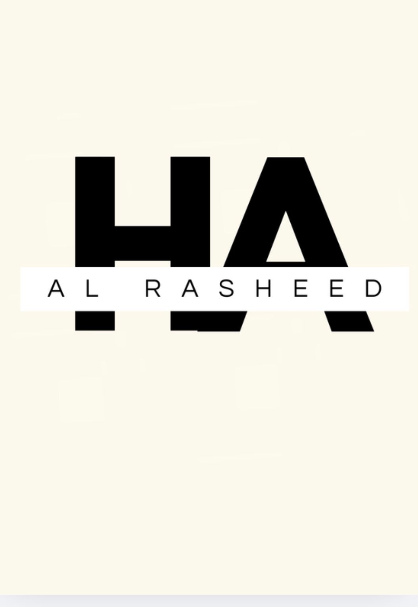

البريد: hanenalrasheed@Gmail.com
الهاتف: 0507958339
لينكدان: https://www.linkedin.com/in/haneen-al-rasheed
طالبة نظم معلومات إدارية في السنة الثالثة أدرس تخصصًا مزدوجًا في اللغة الإنجليزية أمتلك أساسًا أكاديميًا في تصميم قواعد البيانات، تحليل الأنظمة، وأساسيات أمن المعلومات مع خبرة تطبيقية في نمذجة الكيانات والعلاقات (ER Modeling) وتطوير قواعد البيانات المهيكلة ؛ أعمل حاليًا على تطوير مهارات تطوير الويب باستخدام HTML.
تصميم قواعد البيانات وتطوير المخططات: قمت بتصميم وبناء نماذج قواعد بيانات علائقية ضمن المقررات الأكاديمية من خلال تطوير مخططات الكيانات والعلاقات (ERD) ؛ وتحديد المفاتيح الأساسية والأجنبية وتطبيق مبادئ التطبيع (Normalization) لضمان تكامل البيانات واتساقها.
تطوير اللغة الإنجليزية الأكاديمية (Academic English Development): أعمل على تطوير مهارات القراءة والكتابة الأكاديمية من خلال مقررات اللغة الإنجليزية؛ مع تعزيز القدرة على فهم النصوص التقنية وتحسين مهارات الكتابة المنظمة للاستخدام الأكاديمي والمهني.